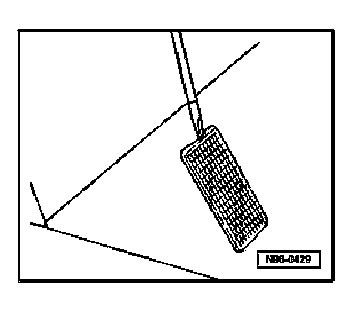
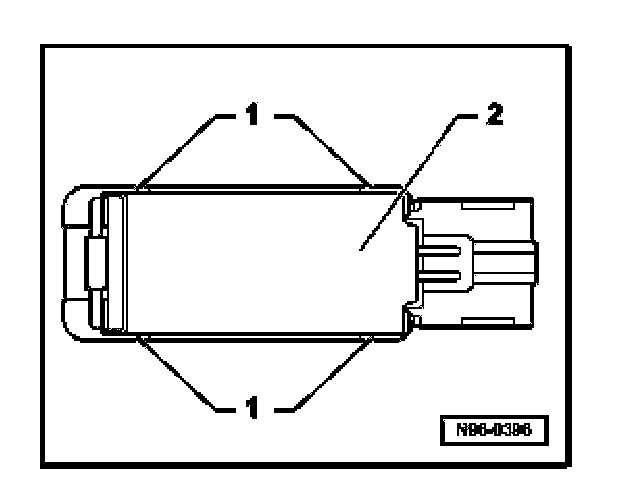
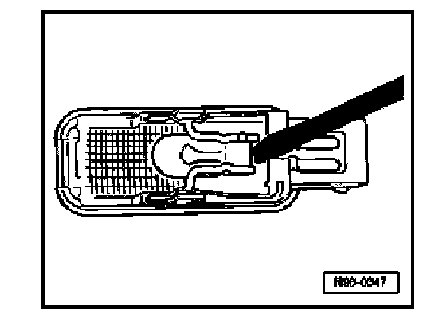

Console Lamp: Service and Repair
Center Armrest Illumination -L157-, Removing And Installing
CAUTION: When removing switches, lights or displays, prevent damage to visible areas of the vehicle interior by always applying appropriate tape to area surrounding the component, and the tools being used (screwdrivers, wedges etc.).
Removing
- Switch off all electrical consumers, switch off ignition and remove ignition key.

- Carefully pry out light using screwdriver.
- Disconnect electrical connection -arrow-.
Bulb, replacing

- Release locking lug -1- and remove heat shield -2- from lens.

- Carefully pry bulb out of holder.
- Replace bulb (12V/5W).
Installing
Install in reverse order of removal.